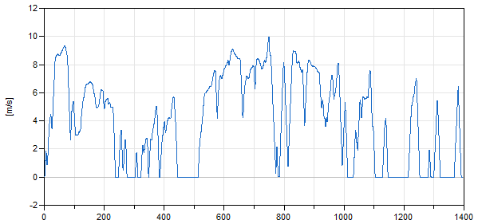
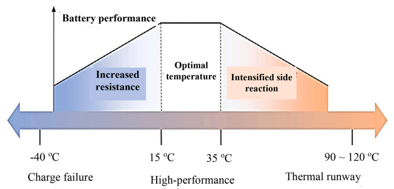

Simulation de la thermique véhicule#
Objectifs#
Nous voulons évaluer le besoin en refroidissement de la batterie afin d’évaluer la néecessité ou non d’un système de gestion thermique spécifique. Pour cela il vous est demander de simuler à la du fichier suivant la témpérature de fonctionnement de la batterie pour :
un profil de vitesse d’utilisation typique: une illustration partielle de ce profil d’utilisation est donnée ci-dessous. Vous simulerez un profil de durée 14000s afin de décharger complétement la batterie et permettre aux températures de monter au sein des cellules.

différents profils de pente : les pentes maximales seronts limitées à 10%. Le fichier d’origine sera paramétré avec une pente moyenne RMS de 0.6%. Vous simulerez différentes configuration de pente en appliquant un gain sur le profil de pente (gain x2,x4).
différentes température extérieure : le fichier d’origine suppose une température extérieure de 30°C. Vous expliquerez l’effet d’une variation de cette température extérieur.
La gamme de température d’utilisation d’une batterie est illustrée ci-dessous:

Il est déconseillé de faire fonctionner une batterie à une température supérieure à 60°C.
Calcul des résistances thermiques en convection#
Pour cette étude vous supposerez que les echanges thermiques des cellules des packs de batteries se feront de manière convective avec une surface d’échange \(S\) d’environ 1x1 m². Pour rappel un transfert thermique convectif peut se représenter par l’équation suivante :
\(\Phi =h S(T_{s}-T_{\infty})\)
avec \(T_{s}\) la température de surface de la paroi, \(T_{\infty }\) la température du fluide à grande distance de la paroi.
Le coefficient de Newton d’échange peut prendre les valeurs typiques suivantes:
air : 5-10 W/m²K en convection naturelle et 0-100 W/m²K en convection forcée
eau : 300-400 W/m²K en convection forcée
Il peut également se calculer à partir nombre de Nusselt avec la relation semi-empirique suivante pour un écoulement parallèle à une surface plane isotherme :
\(Nu=0.664 Re^{1/2} Pr^{1/3}\) pour \(Re<5.10^5\) et \(Pr > 0.7\)
avec:
\(Re=\frac{V\,L_{c}}{\nu }\) le nombre de Reynolds
\(Pr=\frac {\nu }{\alpha }=\frac {\mu c_{p}}{\lambda }\) le nombre de Prandtl qui ne dépend que des propriétés du fluide (0.707 pour l’air)
\(Nu=\frac {h L_{c}}{\lambda }\), le nombre de Nusselt.
# Exemple de calcul de h
V=10 # [m/s] vitesse
Lc=1 # [m] dimension de la plaque
# Propriété de l'air
Pr=0.707 # [-] Prandt
upsilon = 15.6e-6 # [m2⋅s−1] Viscosité cinématique de l'air
lamb= 0.0262 # [W m−1 K−1] conductivité thermique
# Calcul de Nusselt
Re=V*Lc/upsilon # []
Nu=0.664*Re**(1/2)*Pr**(1/3)
# Calcul de h
h=Nu*lamb/Lc
print("h = %.2f W/m^2K"%h)
h = 12.41 W/m^2K
Gestion thermique par le controleur de véhicule#
Proposez une solution logicielle implémentable dans un controleur de véhicule (VCU) qui permettrait de limiter l’échauffement de la batterie.
Références#
[Nusselt] Nombre de Nusselt, site wikipedia
[Olabi, 2022] Olabi, A. G., Maghrabie, H. M., Adhari, O. H. K., Sayed, E. T., Yousef, B. A., Salameh, T., … & Abdelkareem, M. A. (2022). Battery thermal management systems: Recent progress and challenges. International Journal of Thermofluids, 15, 100171. Link